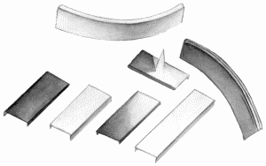
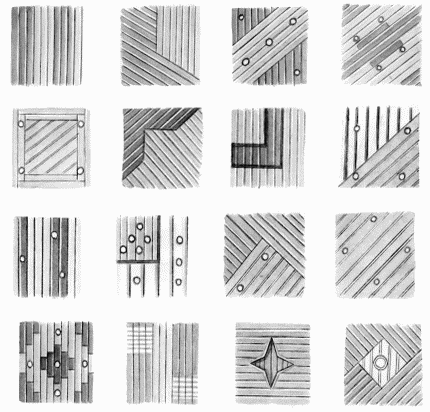

Монтаж подвесных реечных потолков.

В комплект подвесного потолка входят:
– собственно рейки;
– шина (каркас);
– плинтус.
Также к комплекту прилагается и инструкция по монтажу.
О том, что такое рейки, вы уже знаете. Другой составной частью конструкции является шина, представляющая собой стальную или алюминиевую планку с зубчиками, за которые цепляют рейки. Для каждого типа реек требуется особая шина, чтобы на готовом покрытии не было перекосов, щелей и изгибов. Кроме того, рейки одной фирмы нельзя крепить на шину другой.
Шину с прикрепленными к ней рейками цепляют за подвес, который можно регулировать по высоте. Это очень важная деталь всей конструкции: потолок получил свое название потому, что висит на подвесе. Не забывайте о том, что подвесные реечные потолки занимают достаточно много места (5–11 см высоты), и применение их в квартире с низкими потолками нецелесообразно.
Плинтус – это декоративная деталь, закрывающая стык между стеной и потолком.
При покупке реечных подвесных потолков многие нанимают бригады монтажников-профессионалов. Подобную услугу довольно часто оказывают фирмы, продающие потолки.
Конечно, если очень захотеть, можно обойтись без этих дополнительных трат и заняться установкой реечного подвесного потолка самостоятельно. Особых умений не потребуется. Главное – действовать очень осторожно, придерживаясь инструкции. Если вы слишком сильно нажмете на рейку, на ней останется вмятина, и исправить подобный дефект уже нельзя.
В том случае, если требуется объединить потолком два помещения, находящихся на разных уровнях, приобретают изогнутый подвесной реечный потолок (рис. 37).

Рис. 37. Рейки для изогнутого подвесного потолка.
Весь ассортимент реечных потолков условно можно разделить на пять групп:
– металлик;
– матовый;
– глянцевый;
– зеркальный;
– фактурный.
Цветовая гамма реечных потолков представлена 27 оттенками, причем для каждого вида поверхности есть определенное количество оттенков. Так, например, для матового – 9, для глянцевого – 2, для металлика – 10, для зеркального – 4, для фактурного – 2.
Существуют следующие варианты сборки реечных потолков (рис. 38):
– геометрический узор;
– разноуровневый потолок;
– зеркальный;
– комбинированный (совмещение реечного потолка с другими видами отделки, например гипсокартоном);
– зональное разделение комнат;
– оформление арок;
– моделирование волн.

Рис. 38. Узоры сборки реечных потолков.
Многие жилые помещения оборудованы системами вентиляции. Это представляется удобным, особенно в случае повышенной влажности. Внешне вентиляционные коммуникации выглядят, конечно же, не очень привлекательно. Однако их можно прикрыть с помощью подвесных потолков. Для того чтобы не преградить доступа воздуха в помещение, в потолочных панелях делают пробивку вентиляционных отверстий.
Реечные потолки бывают открытыми и закрытыми. Основная особенность реечного потолка открытого типа состоит в наличии открытого пространства между декоративными панелями. Такие потолки, как правило, применяют в помещениях с высокими потолками. В обычных жилых помещениях такие потолки устанавливают очень редко, в основном из-за требования создания особого освещения: светильники на потолке должны быть развернуты таким образом, чтобы световой поток не попадал в межпотолочное пространство.